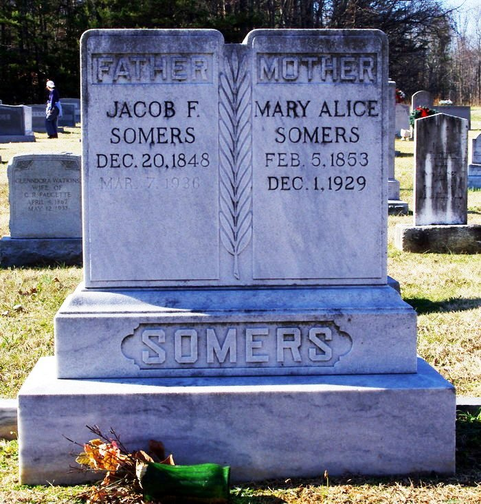

|
|
| 
Mary Alice WHITT (1853-1929) |
Mary Alice WHITT 1 2 3 4 5 6 7
DEATH: Mary's North Carolina Death Certificate clearly states she died at 1:00 pm on November 30, 1929. However, her gravestone shows her date of death as December 1, 1929, which is incorrect.
-- Caswell County Historical Association of North Carolina, Caswell County Family Tree (http://wc.rootsweb.ancestry.com/cgi-bin/igm.cgi?db=caswellcounty) Mary married Jacob "Frank" Franklin SOMERS, Jr., son of Jacob Franklin SOMERS and Mary Ann Paisley HANNAH, on Nov 4, 1873 in Rockingham County, North Carolina. (Jacob "Frank" Franklin SOMERS, Jr. was born on Dec 20, 1848 in Alamance County, North Carolina, died on Mar 7, 1936 in Caswell County, North Carolina and was buried in Camp Springs United Methodist Church Cemetery, Caswell County, NC 9.) |
 General Notes:
General Notes: